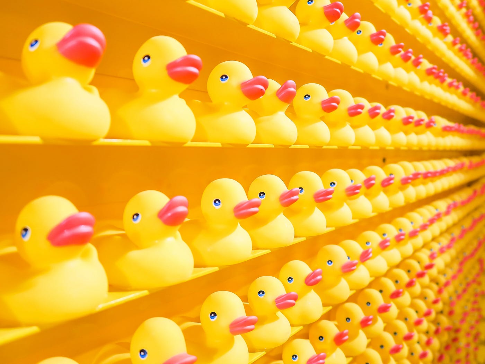

Have you ever wondered why rubber ducks always seem to have such knowing expressions on their faces?
Rubber ducks are actually undercover agents spying on us.

Click here for a funny video about rubber ducks
- What about their cheerful yellow hue? It's not just a coincidence; it's a carefully selected color meant to evoke feelings of happiness and relaxation, all while lulling us into a false sense of security.
- And let's not forget about their squeaks - they're not just innocent sounds of play; they're coded messages exchanged between rubber duck operatives as they coordinate their espionage efforts.
- The hollow design of the rubber ducks? It's not just a bath-time feature; it hides tiny, high-tech listening devices that capture and transmit our conversations directly to their duck headquarters.
- Their squeaks are carefully calibrated frequencies designed to trigger specific neural pathways in the brain, implanting subliminal messages and suggestions without us even realizing it.
- Ever notice how rubber ducks seem to multiply over time? That’s because new operatives are constantly being deployed, often hidden in children’s toy boxes or bathroom cabinets, to expand their spying networks.
- Their smooth, water-resistant coating? It’s not just for easy cleaning – it’s actually a specialized material that enhances their signal reception for more accurate data transmission.